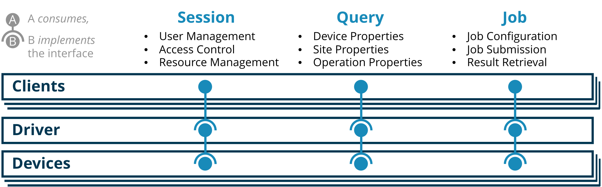

|
QDMI v1.0.0b2
Quantum Device Management Interface
|
|
QDMI v1.0.0b2
Quantum Device Management Interface
|
During the development of QDMI, we had to make several design decision, which we want to outline in the following. This page is supposed to serve as a reference for why things are as they are in QDMI. Simultaneously, it should help to get a better understanding of the principles of QDMI. To this end, this page is useful for everyone working with QDMI.
QDMI consists of three components, namely:
The device represents the physical quantum computer or also a classical simulator imitating a quantum computer. Multiple devices are managed by the driver. For that, the driver maintains a list of devices that are currently available. A driver can decide for itself how it implements the connection to the devices. For example, the implementation of a driver contained in the examples directory loads the devices as dynamic libraries. For that the device implementations must be compiled to dynamic libraries and the location of those libraries must be made known to the driver. A different approach would be to link the device implementations statically into the driver.
The client is the user of the QDMI library. The driver provides access to various devices for the client. The client can use the different functions defined by the interface to gather information about the devices or to submit jobs for execution. To this end, the client calls the respective functions of the driver that in turn forwards the requests to the respective device. For that purpose the function invoked on the driver contains a handle to the device such that the driver knows the device to forward the request to.
This setup results in the following responsibilities for the components: The device must implement all functions defined by the QDMI control and query interface such that they can be called by the driver. Additionally, the device must implement the types for sites, operations, and jobs. Handles to those are passed to the driver and further to the clients to refer to the respective object. However, only the device knows the implementation of those; for the other components those handles are only opaque pointers. The implementation of those types can be used by the device to store information about the sites, operations, and jobs, respectively.
The driver must implement the client interface since it receives the calls by the client. Furthermore, the driver is responsible for the management of the devices. The devices for a client are managed in sessions. Hence, a client must first create a session and through the session the client can access the devices. To this end, the driver has to implement the type session that can store information about itself. Similar to the device's type, the session is just an opaque handle for the client and only the driver knows about its implementation.
The interplay of the components is illustrated in the following schematic. It also contains the various interfaces that are described in the next section.

As depicted in the schematic above, the components of QDMI communicate through three different interfaces, namely:
However, those interfaces do not map directly to the components of QDMI. Instead, the session interface is exclusively used for the communication between the client and the driver. The client calls functions of the session interface that is implemented by the driver.
The control and query interfaces facilitate the communication between the client and the device. Nevertheless, the communication does not take place directly between those components and always goes through the driver. To this end, the control and query interface have two sides, the client and device side. The device side of the control and query interface are implemented by the device and consumed by the driver. In turn, the client side is implemented by the driver and consumed by the client.
The split of this part of QDMI into the control and query interface is motivated by the fact that the control interface is used to control job execution and everything connected to it. The information flow here is bidirectional. On the other hand, the information flow through the query interface is purely unidirectional from the device to the client.
All symbols and types defined by each device must be prefixed with a unique prefix. Besides the branding aspect for hardware vendors, this eases debugging and maintenance of the code. When an error occurs, the error message will contain the function name where the error occurred. By having a unique prefix, it is clear in which device the error occurred.
Moreover, a unique prefix is necessary to facilitate static linking of the device implementations. When the device implementations are linked statically into the driver, the symbols must be unique otherwise the linker will report name conflicts.
The interface contains a couple of functions to retrieve information in various formats. The functions are designed in a generic fashion such that almost arbitrary data can be transferred. Before we explain the usage of the function, we shortly highlight the advantages of this design. Another alternative to the chosen one, would be to introduce a new function for each type that can be retrieved. Since the type of data is very individual to the property whose value should be retrieved, this would require a specific function for almost every property. Even though some properties of the same type could be put into one function, this design would make the interface very rigid. For every new property that should be added that brings a new type, a new function would have to be added to the interface, which introduces a breaking change. Hence, devices not implementing this newly added property could not be used with the updated interface. An extreme variant of the above would be to have a dedicated function for each individual property, which is not desirable for the same reasons.
The chosen design allows for a better compatibility with future versions of the interface. When a new property is added, this can simply be added to the list of properties. The retrieval of its value can be implemented via the same functions and the interface does not break. Device implementations of an older interface version might just return QDMI_ERROR_INVALIDARGUMENT for the newly added properties but no segmentation fault or similar happens.
In the following, the general usage of functions for data retrieval is explained by the aid of the example of QDMI_query_device_property. This function receives a handle to a device that is—in the view of the client—an opaque pointer to a device. This device handle must first be retrieved from the function QDMI_session_get_devices. This function has the signature:
To retrieve handles to the device, the client must allocate some memory region where it wants to store the handles. This memory region is passed in the parameter devices. The parameter num_entries specifies the number of devices that fit into the allocated memory. The client can come to know the size of a single device handle by calling the function sizeof(QDMI_Device) and use that to allocate a properly sized memory region. The parameter num_devices is a pointer to a variable that will store the number of devices that were actually written into the allocated memory after calling the function. The function can also be called with a NULL pointer for devices to only retrieve the number of devices that are available which will, in this case, be returned in num_devices. Simultaneously, if num_devices is NULL, it is ignored, and the function only writes the number of devices into the memory pointed to by devices.
With the device handles at hand, the function QDMI_query_device_property can be called for one device. The signature of the function is:
The semantics of this function is actually similar to the one described earlier. The first two parameters denote the device and the property to query. This time value is a pointer to a memory region of type void*. The parameter size specifies the size of the memory region pointed to by value in the number of bytes, i.e., not the number of times the type of the property fits into the memory region. The parameter size_ret is a pointer to a variable that will store the number of bytes that were actually written into the memory region pointed to by value. To retrieve the actual returned value of the property, the client must cast the pointer value to the type of the property. The type it must be casted to is defined by the property and can be taken from the documentation of the property.